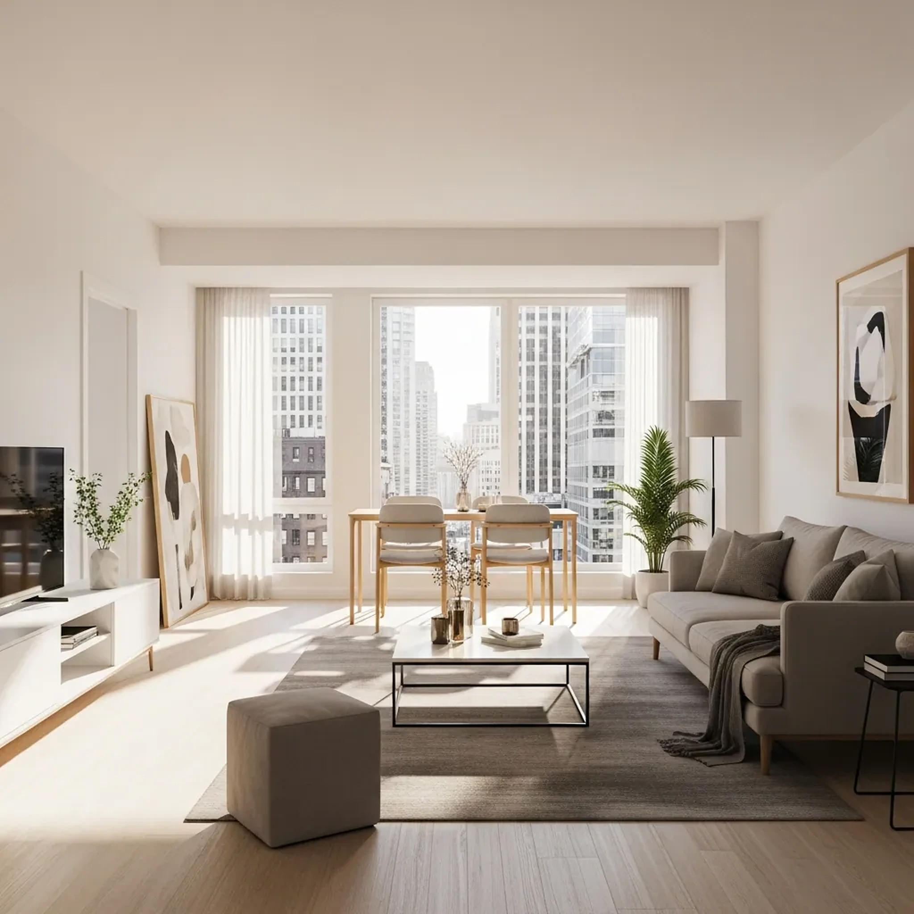
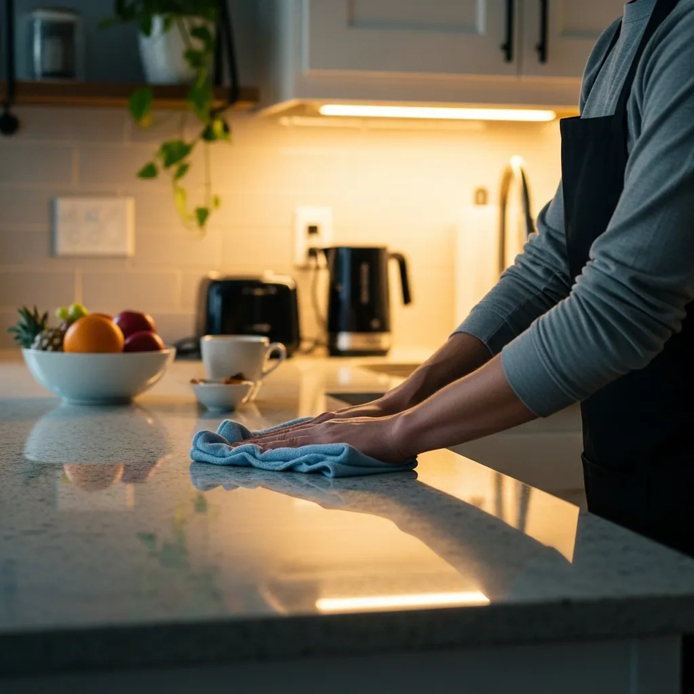
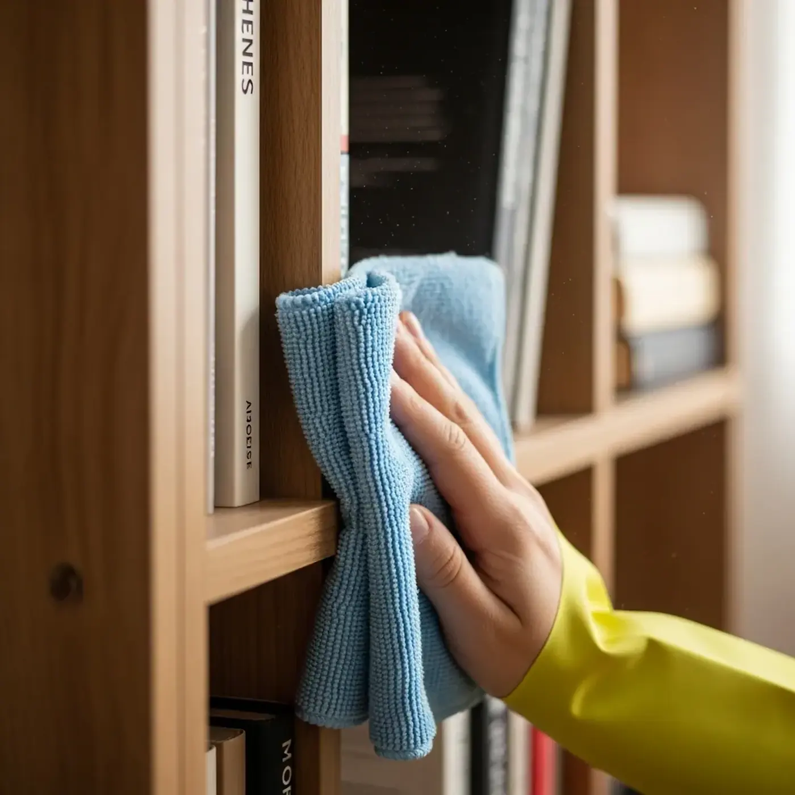
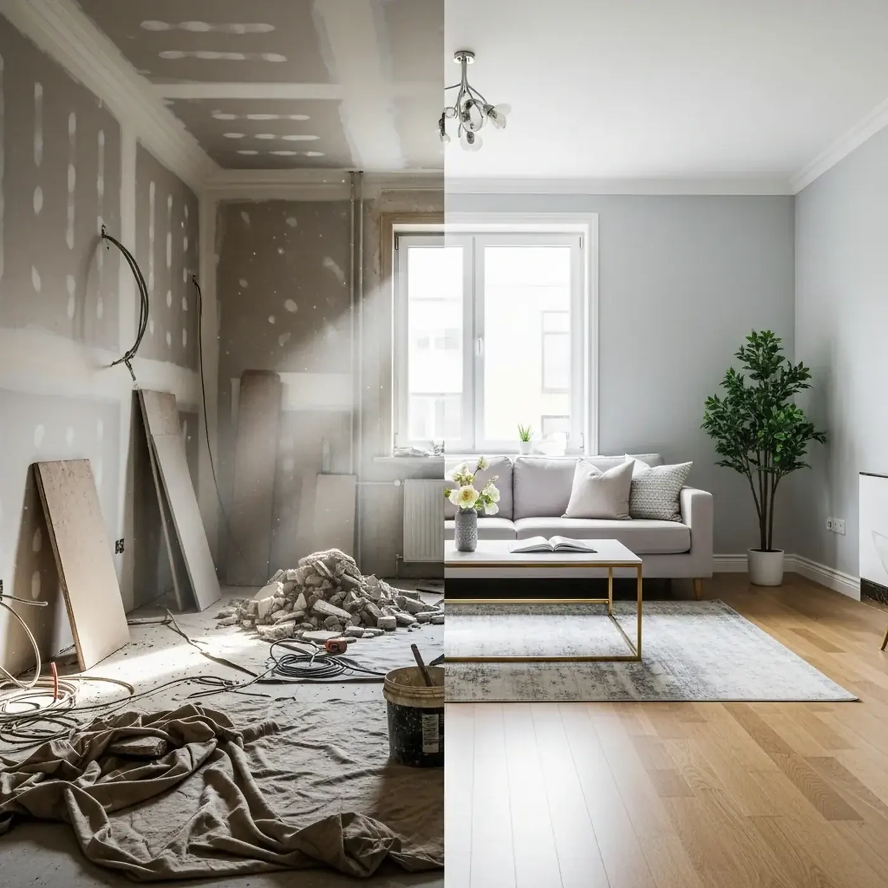
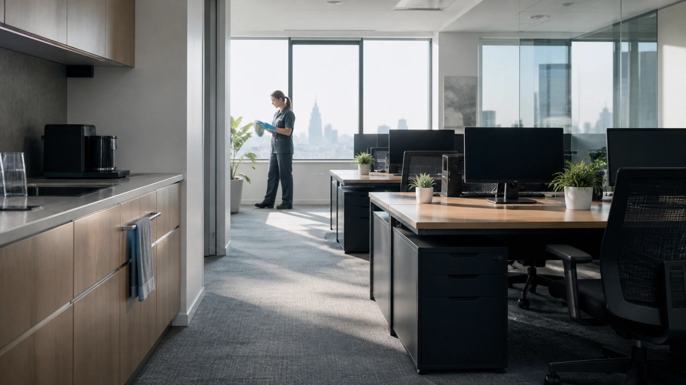

KARTA FC—024DO POTWIERDZENIA
WARSZAWA / DISPATCH 06:30–20:00
Najpierw jasny zakres. Potem czyste przekazanie.
Sprzątanie mieszkań i małych biur z listą prac, orientacyjnym czasem oraz prostym odbiorem — bez zgadywania, co znaczy „dokładnie”.
Zbuduj kartę zlecenia
Jedno zlecenie. Wszystko na liście.
Przedział jest orientacyjny. Ostateczne potwierdzenie zależy od stanu, dostępu i faktycznego zakresu.
Cztery usługi. Inny punkt końcowy.
Wybierz po stanie przestrzeni, nie po nazwie pakietu.



Każde pomieszczenie ma własny punkt odbioru.
Lista nie mówi „sprzątnąć kuchnię”. Rozdziela powierzchnie, kontakt, podłogę i rzeczy, których nie wolno ruszać bez zgody.
Dziesięć minut przygotowania oszczędza godzinę zgadywania.
- PRZEJŚCIEUsuń rzeczy z podłogi i udostępnij pomieszczenia.
- DELIKATNEOznacz powierzchnie, przedmioty i środki niedozwolone.
- DOSTĘPPotwierdź wejście, wodę, prąd i miejsce na sprzęt.
- PRIORYTETWskaż jeden obszar, który ma być sprawdzony jako pierwszy.
Najpierw powierzchnia. Potem środek.
Ta sama chemia nie pasuje do drewna, kamienia, szkła i stali. Karta zlecenia powinna wskazywać materiał oraz ograniczenie.
DREWNOmało wilgoci · bez długiego kontaktu
KAMIEŃbez kwasów · środek potwierdzony
SZKŁOczysta ściereczka · kontrola smug
STALzgodnie z kierunkiem wykończenia
EKRANYwyłącznie po zgodzie i wyłączeniu sprzętu
Odbiór trwa pięć minut.
Sprawdzamy razem obszary wysokiego kontaktu i zgłaszamy ograniczenia, zanim zespół wyjdzie.
- 01Zakres
lista zgodna z kartą
- 02Powierzchnie
brak widocznych smug i pyłu
- 03Kuchnia / łazienka
punkty kontaktu i armatura
- 04Uwagi
co było niedostępne lub ryzykowne
„Czysto” musi dać się sprawdzić.
Punkt odbioru opisuje widoczny rezultat w normalnym świetle. Nie udaje sterylności ani renowacji uszkodzonej powierzchni.
WZROKbrak luźnego kurzu, włosów i widocznych smug
DOTYKsuche punkty kontaktu bez lepkiej pozostałości
ZAPACHneutralny po przewietrzeniu, bez obietnicy dezynfekcji
OGRANICZENIEtrwałe osady i uszkodzenia zapisane w uwagach
Uwagi nie są porażką. Są częścią przekazania.
Jeśli obszar jest niedostępny, materiał nieznany albo zabrudzenie wymaga specjalisty, zapisujemy to zamiast improwizować.
UWAGA / FC—024—03 / DEMOKamienny blat bez potwierdzonego rodzaju i instrukcji pielęgnacji.
Działanie: wyłączyć z mokrego czyszczenia, odkurzyć bezpiecznie, poprosić o dokumentację materiału.
STATUS: DO DECYZJIZespół pracuje według jednej karty.

Biuro wraca do pracy, nie do zapachu detergentu.
Praca poza ruchem zespołu, ostrożność przy elektronice i jasny podział stref ograniczają przerwy.
- Przed
- dostęp, alarm, klucze, poufne materiały
- W trakcie
- sprzęt wyłączony, mokre podłogi oznaczone
- Po
- zamknięcie, światła, zdjęcie uwag bez danych wrażliwych
Gdzie działamy?
Portfolio concept zakłada obsługę Warszawy. Dojazd i dostępność terminu są potwierdzane przed przyjęciem zlecenia.
ŚródmieścieMokotówWolaŻoliborzOchotaPraga
Czego zwykłe sprzątanie nie obiecuje.
NAPRAWAusunięcia rys, przebarwień i uszkodzeń materiału
SPECJALISTYCZNEpleśni, odpadów niebezpiecznych i pracy na wysokości
DEZYNFEKCJAefektu medycznego bez osobnej procedury i produktu
ORGANIZACJAprzenoszenia dokumentów i rzeczy osobistych bez instrukcji
Pytania przed potwierdzeniem.
Odpowiedzi dotyczą demonstracyjnego procesu, nie realnej dostępności usługi.
Czy cena z karty jest ostateczna?
Nie. To orientacyjny przedział zależny od powierzchni, typu usługi i dodatków. Stan i dostęp muszą zostać potwierdzone.
Czy środki są w cenie?
Koncepcja zakłada typowy zestaw, ale realne wdrożenie wymaga listy produktów, kart bezpieczeństwa i zasad dla powierzchni.
Czy trzeba być na miejscu?
Potrzebny jest uzgodniony dostęp oraz sposób pięciominutowego odbioru. Szczegóły nie są jeszcze warunkami realnej usługi.
Czy usuwacie każdy osad?
Nie. Trwałe uszkodzenia, materiały ryzykowne i prace specjalistyczne trafiają do uwag, nie do obietnic.
Wyślij kartę, nie luźną wiadomość.
Formularz lokalny — nie zbiera danych.